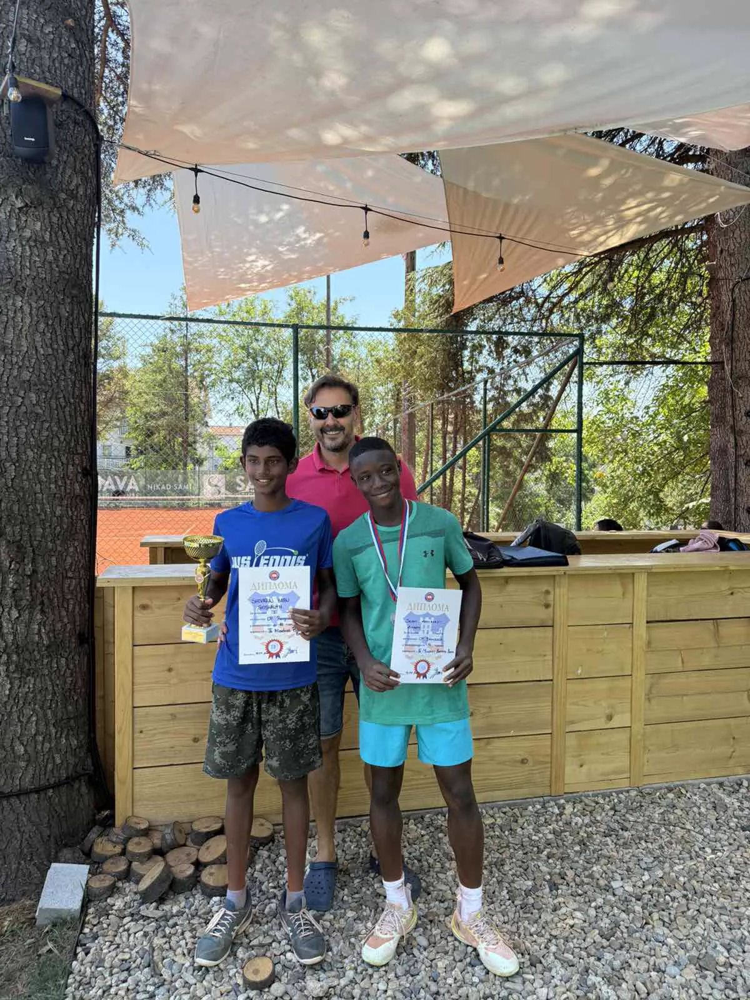

Treneri
Treneri
Ljudi iza Mladosti
Klub su 2024. osnovali teniski treneri i profesori sa Banovog Brda koji su na ovim terenima nekad i radili. Danas vode školu tenisa, individualne treninge i takmičarsku sekciju.
- Licencirani treneri Teniskog saveza Srbije
- Klub je član TSS i TSB
- Treneri koji su obnovili klub

 Stručni tim
Stručni tim
Dva tima, jedan klub
Škola tenisa i rekreacija
Licencirani treneri Teniskog saveza Srbije. Vode školu tenisa za sve uzraste, od najmlađih do odraslih rekreativaca, i individualne treninge.
Škola tenisa-
Vladimir Vasiljević
Licencirani trener TSS
-
Pavle Jovičić
Licencirani trener TSS
-
Nađa Đurđević
Licencirana trenerka TSS
Takmičarska sekcija
Selektovane predtakmičarske i takmičarske grupe, sa planom i programom za svakog igrača. Sekciju vodi glavni trener sa dve asistentkinje.
Individualni treninzi-
Rade Poleksić
Glavni trener
-
Aleksandra Stanković
Asistentkinja
-
Nina Zabrdac
Asistentkinja
Kondicioni treninzi
Snaga, brzina i izdržljivost uz kondicionog trenera kluba, kao podrška svakom nivou, od škole do takmičara.
 Treninzi
Treninzi
Zakaži trening
Javi se telefonom, na WhatsApp ili Viber. Kažeš šta ti treba, a mi dogovaramo termin i trenera.
- Telefon 061 500 50 51 Piši na WhatsApp
- Radno vreme Svaki dan 07–23h Zimi pod balonom
- Adresa Lješka 82, Banovo Brdo Parking ispred kluba